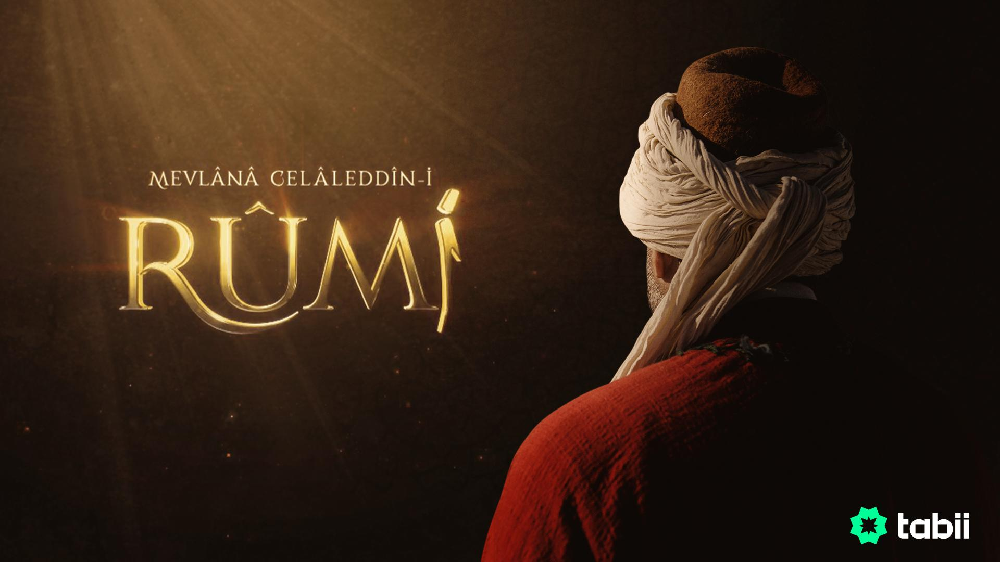

MEVLANA
Mevlana Celaleddin-i Rumi is a mesmerizing television series that delves into the life and teachings of one of the world's most revered mystics. Spanning multiple seasons, this Turkish production takes viewers on an enchanting journey through the life of Mevlana, offering a profound exploration of his philosophy, poetry, and spiritual legacy. Mevlana Celaleddin-i Rumi is a captivating television series that serves as a profound tribute to one of history's most influential mystics. With its exceptional performances, meticulous attention to detail, and exploration of Rumi's teachings, it offers a mesmerizing journey into the depths of spirituality. While it may not be suited for those seeking fast-paced action or casual entertainment, for those interested in Rumi's life and philosophy, this series is an enriching and enlightening experience that is not to be missed.